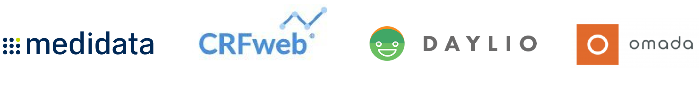
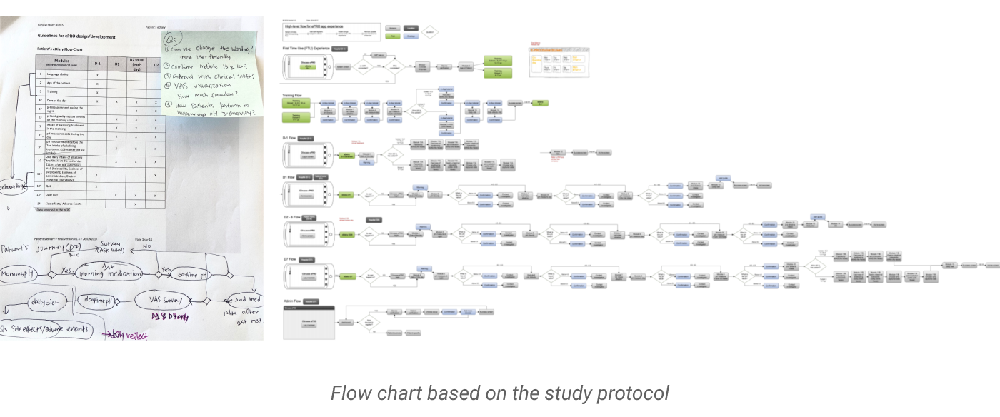
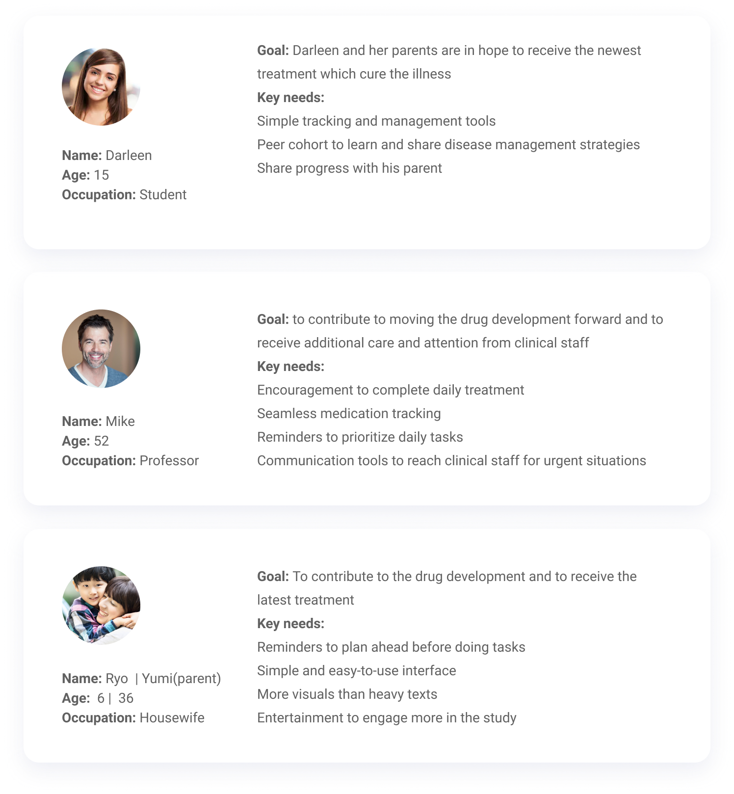

Clincase ePRO 1.0
Duration: 2017 (2.5 months)
My Role: UI/UX Designer
The electronic patient-reported outcome(ePRO) solution that advances clinical trial experience.
notification_important To comply with my non-disclosure agreement, I have omitted and obfuscated confidential information in this case study. All information in this case study is my own and does not necessarily reflect the views of Clincase.
The Team
1 UX designer, 2 UX design interns, 1 product manager, 1 UX wrriter, 3 engineers, 1 marketing manager
My Role as UX Intern
- Collaborated with the cross functional team to create end-to-end experience including concept ideation, prototyping, and production-ready designs.
- Conducted UX research (competitive analysis, secondary research, interviews)
- Created foundational visual langauguage for the new platform
- Provided specs and assets for the implementation
The Problems
Based on the evidence that has been mounting over the past 25 years, unsupervised paper-based self-reports of function and symptom experience are far from optimal compared with data collected electronically.
The solution
Clincase ePRO accelerates the movement from paper diaries and questionnaires to digital data collection system and enhances the integrity and accuracy of data collected in clinical trials.
Design Challenges
Design for people with a chronic condition:For our users, accessibility and function must come first. We came up with countless edge case scenarios to anticipate users’ pain points.
Industry regulations:Designing a healthcare product, we must understand the industry’s requirements and regulations.
Device constraints:Because there are a number of scientific and operational issues that must be addressed before using patient own devices, patients(study subjects) are provided with a handheld device with a device-based proprietary software program.
Designing V1 product:We had too broad range of ideas and case scenarios to consider.
Research
Before diving into the actual work, I first started off with research to get better understanding of the problem space. From this process, I could acknowledge main obstacles and problems of paper-based PRO trials. Knowing the problems and our potential users’ needs enabled me to have the proper mindset towards the problem space.

Market Research
We also performed competitor/comparator analysis on a variety of health management tools in order to gain a better understanding of the competitive landscape.

The top 5 takeaways from landscape analysis were:
- All products provide notifications and direct emailing (some text msg)
- All apps display a list of logged events (logging and tracking)
- Most apps use their dashboards as a central area to list items (i.e. todos and announcements)
- Most apps provide feedback on taken actions motivates users (i.e. insights, check mark, celebratory moment, etc)
- Some products provide digital communication methods (i.e. live chat, messaging, voice call, video call, etc.)
Patient’s Journey
My first official task for this project was mapping out the patient’s journey based off of the study protocol. Looking at the flow diagram, we could acknowledge the areas that required helps for our user to complete the 7-day journey sucessfully.
Ideation
During the brainstorming session, we asked our selves many questions like “How might we reduce burden on our user side” and “How might we better motivate our end users?” In the beginning, we came up with (very) broad range of potential ideas, but we narrowed down and prioritized listed items. Then, we started setting our goals for the MVP version. While we dicussed, I roughly sketched how potential interface could be like so that we could visualize and spark the ideas more.
Initially, we imagined that the dashboard contains entrypoints to each day from day1 through the last day. However, this was not scalable solution for the future, becuase a clinical trial can lasts years while it could be a short study like this. Moving forward, we established the design principles to make sure that we were building a simple, scalable and functional product.
IA & Low Fidelity Wireframe
From the brainstorming session, we came up with hypothesis that the dashboard should focus on today’s list of items. We assumed users could set their expectation for present by following the listed todos easily when they are clearly surfaced upfront.

Interviews
To better understand the mindset of potential users and observe their initial reactions on our concept mocks, we interviewed 6 people and also interviewed 2 clinicians to gauge industry’s concerns and recommendations.
The top three potential users’ pain points were:
- Remembering daily tasks (i.e. taking medications, taking ph level tests, recording data, etc.)
- Unexpected events
- Losing motivation
Key takeaways from interviews with clinicians were:
- Patient’s privacy is crucial. We couldn’t ask patient’s personal data such as name and location
- Vertical visual analogue scale(VAS) can create bias. Horizontal design is reconmmended to pass industry reviews
- We must surface critical messages (i.e. “...contact your clinicial immediately...”)
Personas
After speaking with a broad spectrum of individuals on their experience with disease management, we were able to define their goals and needs. From there we narrowed down to three user personas:
Design Iterations
Dashboard
I explored a few iterations of a lo-fi prototype and tested with six users which we then presented to the clinicians. I initially thought that featuring day-to-day journey on dashboard would help users understand where they are and where to go next. However, l then ultimately decided to create a version that was focused on today’s view with chronologically stacked lists of todos, from one that required an immediate action to others that are upcoming for the day. Lastly, I created cards with navigation that provides weekly overviews that provided clear guidance how our users could track and record their heath data.
I then narrowed in and selected those components that best solved for an intuitive dashboard experience to help guide users to complete assigned tasks for the day.
Survey flow
I initially wanted to chunk questions into a categories and lay them in single page, and then ultimately decided to create a version that was a more intuitive and focused with auto scroll interactions. Lastly, I created a page by page iteration that renders well on different devices and allows users to focus on a question at a time to reduce cognitive load.
Final Screens
Onboarding flow
The new design for the questionnaire flow is more intuitive and welcoming as it centers around a designed conversation between user and avatar. The page by page flow helps reduce cognitive load and is tablet optimized.
Logging pH measurement
The new design for the questionnaire flow is more intuitive and welcoming as it centers around a designed conversation between user and avatar. The page by page flow helps reduce cognitive load and is tablet optimized.
Next Steps
Mobile app:
To build a mobile application that would expand the business to a new market. Towards the end of the internship, I also created concept mocks of the mobile version to inspire the team and their partners.
Scalability:
This first study was 7-day trial which was relatively short-term, but the study period can varied in length from